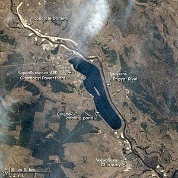

В 2006 году Американской некоммерческой научно-исследовательской организацией Институт Блэксмита был опубликован список самых загрязнённых городов мира, в котором Чернобыль оказался в первой десятке[6]. В центре г. Чернобыль в 2010—2011 гг. сооружён мемориальный комплекс к 25-летию аварии на Чернобыльской АЭС. Автор проекта — народный художник Украины, заслуженный деятель искусств Анатолий Гайдамака. На открытие комплекса в апреле 2011 года приезжали президенты России и Украины. В ноябре 2014 года в комплекс был перенесён и торжественно открыт памятник чернобыльской партизанке Паше Осидач, убитой гитлеровцами в 1943 году. Памятник планировался к установке ещё в 1986 году, но помешала авария. В послеаварийные годы скульптура хранилась на территории комплекса строительно-ремонтных работ (двор СШ № 2). В комплекс также входит музей, открытый в помещении бывшего кинотеатра «Украина» (до 2011 года в этом здании располагался продуктовый магазин и кафе-бар). В музее собраны вещи жителей эвакуированных сел, таблички с названиями улиц и номерами домов, детские игрушки, предметы быта и т. д. Рядом с музеем весной 2011 года был заложен первый камень будущего памятника ликвидаторам последствий аварии на Чернобыльской АЭС[7].
Космический снимок Чернобыля, ЧАЭС и Припяти со станции «Мир», 1997